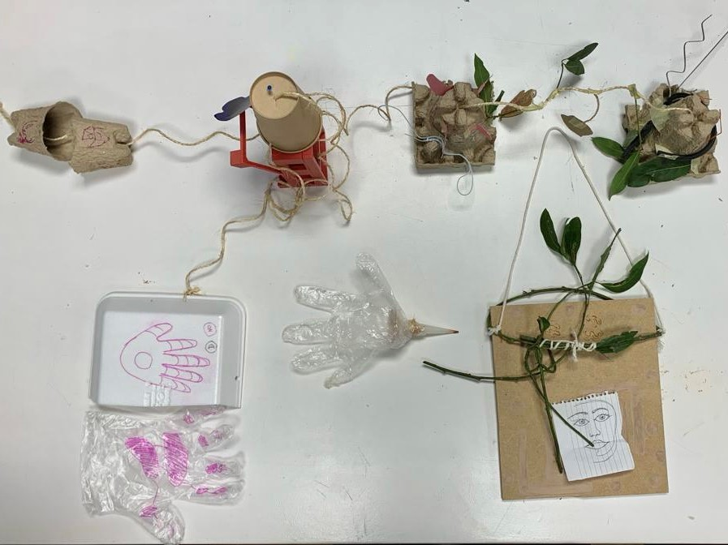

L.W.Y.O.I.
2 November 2021
Oscar Tomico & Kristina Anderson
Given, or rather found, waste materials from around/in the school were used to create magic machines, machines that would be used to inspire and reflect. The group that i’m in, post-consumption, came to this collective statement to summarize our magic machines: “Although we created different objects individually, as a group we have found common meanings to our magic machines. The theme could be summarized as human relationships, whether it be a machine that helps communication between two people, detect emotions through empathy, find new ways of capturing potential friends, finding your loved ones, or framing a moment. Together, we all found ways to create something which interacts with another; emotionally, intellectually, or physically.”
Looking at all of the materials available, I wasn’t sure what to make at first. I noticed that some cardboard pieces looked like the shape of cups. I used them to make the overall design, a childhood favorite of attaching cups with a string which allows people to communicate at a distance simply by using this device. One cup represents my classmates and people I’ll interact with at MDEF. There were pieces of plastic that looked like wires, representing the technical knowledge of others. Pink flags represented bits of colorful knowledge that would “flag” my attention. My cup, on the other side, contained a piece of a windshield wiper I found with the intention of it metaphorically washing away fears. A piece of orange plastic was taped on because I have been told my personality resonates with the color. Along the string, or the path of the masters, eucalyptus leaves hung to represent little moments of life and excitement. Two cardboard hands hung at the center, far enough to be separate from each other but close enough that they could touch in a high-five. They act as symbols for collaboration and working together. The magic machine can be called handshake protocol because of the hands in the center, but also because of the system used for collaboration between devices.